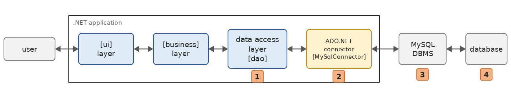
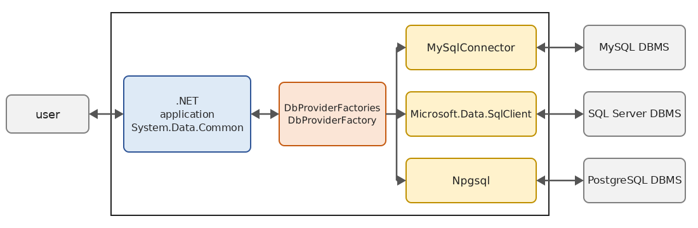
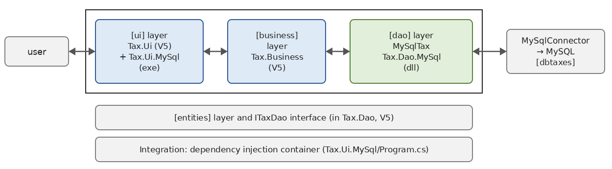

10. Acceso a bases de datos con ADO.NET
10.1. El conector ADO.NET
Retomemos la arquitectura en capas que se ha utilizado repetidamente desde el capítulo 6. Hasta ahora, la capa [dao] de la aplicación [Tax] ha utilizado tres tipos de fuentes de datos:
- datos escritos directamente en el código ([HardwiredTax]);
- datos de un archivo de texto ([FileTax]);
- datos de un archivo JSON ([JsonTax]).
En este capítulo examinamos el caso en que los datos provienen de una base de datos. La arquitectura queda así:

En el diagrama anterior, la capa [dao] [1] se comunica con el SGBD (Sistema de Gestión de Bases de Datos) [3], que administra la base de datos [4], mediante una biblioteca de clases específica del SGBD utilizado [2]. Esta biblioteca implementa funcionalidades estándar agrupadas bajo el nombre ADO.NET (ADO por “ActiveX Data Objects”, el nombre de la tecnología de acceso a datos que la precedió en Windows). Se denomina “proveedor de datos” o “conector”. Todos los SGBD comunes tienen un conector ADO.NET.
Las clases de un conector llevan el nombre del SGBD: [MySqlConnection] para MySQL, [SqlConnection] para SQL Server, [NpgsqlConnection] para PostgreSQL… Si la capa [dao] usa estas clases, su código contiene el nombre del conector y cambiar de SGBD exige modificarla. Esta arquitectura es a la vez eficiente (porque un conector escrito para un SGBD específico puede aprovecharlo al máximo) y rígida, porque cambiar de SGBD obliga a cambiar la capa [dao]. Este segundo punto debe relativizarse: las empresas no cambian de SGBD con mucha frecuencia. Además, veremos que, a partir de .NET 2.0, ADO.NET ofrece un “conector genérico” que brinda flexibilidad sin sacrificar el rendimiento.
El curso de 2008 utilizaba, sucesivamente, los SGBD SQL Server Compact (descontinuado desde entonces por Microsoft), SQL Server 2005 Express, MySQL 5 y luego los controladores ODBC y OLE DB, con bases de datos creadas mediante los asistentes de Visual Studio. Aquí usamos un único SGBD, MySQL 8, que el apéndice instala con Laragon, y uno de sus conectores ADO.NET más utilizados hoy en día, MySqlConnector. Las bases de datos se crean mediante scripts SQL ejecutados con el cliente de línea de comandos [mysql]; el apéndice también muestra cómo crearlas con el cliente gráfico HeidiSQL incluido en Laragon.
10.2. Las dos formas de usar una fuente de datos
ADO.NET permite usar una fuente de datos de dos maneras distintas:
- modo conectado;
- modo desconectado.
En el modo conectado, la aplicación:
- abre una conexión con la fuente de datos;
- trabaja con la fuente de datos en modo de lectura/escritura;
- cierra la conexión.
En el modo desconectado, la aplicación:
- abre una conexión con la fuente de datos;
- recupera en memoria una copia de todos o parte de los datos de la fuente;
- cierra la conexión;
- trabaja con la copia de los datos en memoria, leyéndolos y escribiéndolos;
- cuando termina el trabajo, abre una conexión, envía los datos modificados a la fuente de datos para que se actualice y cierra la conexión.
El modo desconectado se basaba en las clases [DataSet] (una pequeña base de datos en memoria, con sus tablas [DataTable], sus filas [DataRow]y sus relaciones) y [DataAdapter] (el puente entre un [DataSet] y la base de datos). Estas clases todavía existen en .NET 10, pero rara vez se usan en aplicaciones nuevas: trabajar con una copia de los datos en memoria y luego guardar los cambios es hoy tarea de un ORM (“Object-Relational Mapper”), que manipula objetos C# ordinarios en lugar de filas de tablas. El ORM de .NET, Entity Framework Core, es el tema del capítulo 11. Como en el curso de 2008, aquí nos centraremos únicamente en el modo conectado, en el que se basa Entity Framework Core.
10.3. Conceptos básicos del manejo de bases de datos
10.3.1. La base de datos de ejemplo
Explicaremos los principales conceptos del uso de una base de datos con una base de datos MySQL llamada [dbarticles]. Contiene una sola tabla, [articles], en la que cada fila describe un artículo de una tienda:
- [ID]: un identificador único del artículo, que es la clave primaria de la tabla;
- [NAME]: el nombre del artículo, que también es único;
- [PRICE]: su precio;
- [CURRENTSTOCK]: su existencia actual;
- [MINIMUMSTOCK]: el nivel mínimo de existencias por debajo del cual hay que reabastecer el artículo.
La base de datos se crea con el siguiente script SQL [sql/dbarticles.sql]:
- Línea 5: el script es un archivo de texto codificado en UTF-8. [SET NAMES utf8mb4] se lo indica al servidor; de lo contrario, los caracteres acentuados podrían ser mal interpretados por el cliente [mysql];
- Líneas 8–9: la base de datos se elimina si existe y luego se vuelve a crear. Así, el script puede ejecutarse varias veces para restaurar la base de datos a su estado inicial. [utf8mb4] es la codificación Unicode completa de MySQL (la codificación histórica [utf8] de MySQL solo codifica caracteres de hasta tres bytes);
- línea 12: [dbarticles] pasa a ser la base de datos actual: los comandos SQL siguientes se ejecutarán sobre ella;
- líneas 15–26: la definición de la tabla [articles]:
- línea 16: la columna [ID] es la clave primaria de la tabla ([PRIMARY KEY]). El atributo [AUTO_INCREMENT], específico de MySQL, indica que su valor lo genera el propio SGBD al insertar una fila: 1, 2, 3… Otros SGBD tienen conceptos equivalentes, pero con una sintaxis distinta ([IDENTITY] en SQL Server, [GENERATED … AS IDENTITY] en PostgreSQL);
- Línea 18: el precio es un número decimal exacto de 10 dígitos con 2 dígitos después del punto decimal. El script de 2008 usaba el tipo [DOUBLE PRECISION], un número de punto flotante, que no es adecuado para montos de dinero (véase la diferencia entre [double] y [decimal] en el capítulo 3). El tipo SQL [DECIMAL] corresponde al tipo C# [decimal];
- Líneas 22–26: restricciones de integridad. [UNQ_NAME] impide que dos artículos tengan el mismo nombre; las restricciones [CHECK] impiden un nombre vacío, un precio negativo o igual a cero, o una existencia negativa. El script de 2008 ya agregaba estas restricciones, pero MySQL las ignoraba silenciosamente; MySQL las aplica desde la versión 8.0.16;
- Líneas 30–36: inserción de seis filas. La columna [ID] no se inicializa: el SGBD le asigna un valor.
El script se ejecuta con el cliente de línea de comandos [mysql], en la carpeta [sql] (el usuario [root] de MySQL no tiene contraseña en la instalación del apéndice; de lo contrario, agregue la opción [-p] y el cliente la solicitará):
El comando no muestra nada si todo sale bien. Se puede verificar la estructura y el contenido de la tabla con el mismo cliente:
- Línea 1: la opción [-t] solicita una presentación en forma de tabla; la opción [-e] especifica los comandos SQL que se ejecutarán, y la opción [--default-character-set=utf8mb4] garantiza que los caracteres acentuados se muestren correctamente en una terminal UTF-8;
- líneas 3–9: la estructura de la tabla, obtenida mediante el comando de MySQL [describe];
- líneas 12–19: el contenido de la tabla. Los valores de la columna [ID] fueron generados por el SGBD.
Una nota sobre la distinción entre mayúsculas y minúsculas: los nombres de columna nunca la distinguen ([name] y [NAME] se refieren a la misma columna), pero los nombres de tabla son nombres de archivo del servidor. No la distinguen en Windows, pero sí en Linux. Para que los ejemplos funcionen en todas partes, la tabla se llama [articles], en minúsculas, y las consultas se refieren a ella de esa manera.
Ahora que tenemos una base de datos, podremos usarla. Antes de hacerlo, repasemos algunos conceptos de SQL.
10.3.2. Los cuatro comandos básicos del lenguaje SQL
SQL (“Structured Query Language”) es un lenguaje parcialmente estandarizado para consultar y actualizar bases de datos. Todos los dialectos de los SGBD cumplen la parte estandarizada de SQL, pero agregan extensiones propietarias al lenguaje que aprovechan sus características específicas. Ya hemos visto dos ejemplos de esto: la generación automática de claves primarias y los tipos de datos permitidos para las columnas de las tablas suelen depender del SGBD.
Los cuatro comandos básicos del lenguaje SQL que presentamos aquí están estandarizados y son compatibles con todos los SGBD:
Comando | Función |
[select col1, col2, … from table1, table2, … where condition order by expression] | La consulta que se usa para recuperar datos de una base de datos. Solo las palabras clave [select] y [from] son obligatorias. Se realiza una combinación (join) con todas las tablas que siguen a la palabra clave [from]; solo se conservan las columnas que siguen a la palabra clave [select] ; solo se conservan las filas que cumplen la condición de la palabra clave [where] ; las filas resultantes, ordenadas según la expresión de la palabra clave [order by], forman el resultado de la consulta. Este resultado es una tabla. |
[insert into table(col1, col2, …) values (val1, val2, …)] | Inserta una fila en [table]. [(col1, col2, …)] especifica las columnas de la fila que se rellenarán con los valores de [(val1, val2, …)]. |
[update table set col1=val1, col2=val2, … where condition] | Actualiza las filas de [table] según [condition] (todas las filas si no hay [where]). En esas filas, la columna [coli] toma el valor [vali]. |
[delete from table where condition] | Elimina todas las filas de [table] que cumplen [condition] (todas las filas si no hay [where]). |
Escribiremos una aplicación de consola que emite comandos SQL sobre [dbarticles]. Este es un ejemplo de la salida. Se invita al lector a comprender los comandos SQL emitidos y sus resultados:
- línea 2: la cadena de conexión: contiene todos los parámetros necesarios para conectarse a la base de datos;
- línea 4: se recupera el contenido de la tabla [articles]. Los precios se muestran con punto decimal;
- línea 17: se inserta una nueva fila. Observe que la columna [id] no se inicializa en esta operación, porque el SGBD generará su valor;
- Línea 20: verificación. Línea 32: la fila efectivamente se agregó, con [id] 7. Con [select *], los nombres de columna son los de la tabla, en mayúsculas;
- Línea 34: aumentamos en un 10 % el precio del artículo que acabamos de agregar;
- Línea 43: el aumento de precio se hizo efectivo;
- línea 45: se elimina el artículo agregado anteriormente;
- línea 48: verificamos que solo quedan seis artículos;
- línea 56: el programa solo acepta los cuatro comandos [select], [insert], [update], y [delete];
- línea 60: un error informado por el SGBD: la tabla [article] no existe;
- línea 63: la restricción de unicidad [UNQ_NAME] impide agregar un segundo artículo [bike]. Los mensajes de error de MySQL, al igual que los de .NET, están en inglés.
10.3.3. Clases base de ADO.NET para el modo conectado
Volvamos al diagrama de una aplicación que accede a una base de datos mediante un conector ADO.NET:
En el modo conectado, la aplicación:
- abre una conexión con la fuente de datos;
- trabaja con la fuente de datos en modo de lectura/escritura;
- cierra la conexión.
En estas operaciones intervienen principalmente tres tipos de objetos:
- la conexión, que encapsula las propiedades y los métodos de la conexión con la base de datos;
- el comando, que encapsula las propiedades y los métodos del comando SQL ejecutado;
- el lector de datos (data reader), que encapsula las propiedades y los métodos del resultado de un comando SQL [select].
Cada conector define sus propias clases ([MySqlConnection], [MySqlCommand], [MySqlDataReader] para MySqlConnector), que derivan de clases abstractas comunes a todos los conectores, definidas en el espacio de nombres [System.Data.Common]: [DbConnection], [DbCommand], [DbDataReader]. El curso de 2008 presentaba las interfaces [IDbConnection], [IDbCommand] e [IDataReader] del espacio de nombres [System.Data], que estas clases implementan. Hoy se prefieren las clases abstractas: ofrecen más funcionalidad que las interfaces, a las que ya no era posible agregar métodos sin romper los conectores existentes (los métodos de interfaz predeterminados aún no existían). Las versiones asíncronas de los métodos ([OpenAsync], [ExecuteReaderAsync], [ReadAsync]…), por ejemplo, existen solo en las clases abstractas.
10.3.3.1. La clase DbConnection
Se utiliza para administrar la conexión con la base de datos. Los métodos M y las propiedades P de esta clase que usaremos son los siguientes:
Nombre | Tipo | Función |
[ConnectionString] | P | Cadena de conexión a la base de datos. Especifica todos los parámetros necesarios para establecer una conexión con una base de datos determinada. |
[Open] | M | Abre la conexión con la base de datos definida por [ConnectionString]. |
[Close] | M | cierra la conexión. [Dispose] también la cierra. |
[BeginTransaction] | M | inicia una transacción. |
[CreateCommand] | M | crea un comando asociado a esta conexión. |
[State] | P | Estado de la conexión: [ConnectionState.Closed], [ConnectionState.Open], [ConnectionState.Connecting], [ConnectionState.Executing], [ConnectionState.Fetching], [ConnectionState.Broken]. |
Con MySqlConnector, se puede establecer una conexión de la siguiente manera:
o, de forma más sencilla, pasando la cadena de conexión al constructor:
10.3.3.2. La clase DbCommand
Se utiliza para ejecutar un comando SQL o un procedimiento almacenado. Los métodos M y las propiedades P de esta clase que usaremos son los siguientes:
Nombre | Tipo | Función |
[CommandType] | P | especifica qué se va a ejecutar. Sus valores provienen de la enumeración [CommandType]: [CommandType.Text] ejecuta el comando SQL definido en la propiedad [CommandText] (es el valor predeterminado); [CommandType.StoredProcedure] ejecuta un procedimiento almacenado en la base de datos. |
[CommandText] | P | el texto del comando SQL que se va a ejecutar si [CommandType] es igual a [CommandType.Text], el nombre del procedimiento almacenado que se va a ejecutar si [CommandType] es igual a [CommandType.StoredProcedure]. |
[Connection] | P | la conexión [DbConnection] que se utilizará para ejecutar el comando SQL. |
[Transaction] | P | la transacción [DbTransaction] en la que se ejecutará el comando SQL. |
[Parameters] | P | la lista de parámetros de un comando SQL parametrizado. El comando [update articles set price=price*1.1 where id=@id] tiene el parámetro [@id]. |
[ExecuteReader] | M | Ejecuta un comando SQL [select]. Devuelve un objeto [DbDataReader] que representa el resultado del [select]. |
[ExecuteNonQuery] | M | ejecuta un comando SQL [update], [insert] o [delete]. Devuelve el número de filas afectadas por la operación (actualizadas, insertadas, eliminadas). |
[ExecuteScalar] | M | ejecuta un comando SQL [select] que devuelve un único resultado, como [select count(*) from articles]. |
[CreateParameter] | M | crea un parámetro [DbParameter] de un comando SQL parametrizado. |
[Prepare] | M | permite optimizar la ejecución de una consulta parametrizada cuando se ejecuta varias veces con parámetros diferentes. |
La ejecución de un comando SQL sin transacción adopta la siguiente forma:
10.3.3.3. La clase DbDataReader
Encapsula los resultados de un comando SQL [select]. Un objeto [DbDataReader] representa una tabla con filas y columnas, que se procesan secuencialmente: primero la primera fila, luego la segunda, y así sucesivamente, sin posibilidad de retroceder. No todas las filas se cargan en memoria: el lector las recibe del servidor a medida que se leen. Los métodos M y las propiedades P de esta clase que usaremos son los siguientes:
Nombre | Tipo | Función |
[FieldCount] | P | El número de columnas de la tabla de resultados. |
[GetName] | M | [GetName(i)] devuelve el nombre de la columna número i de la tabla de resultados (las columnas se numeran a partir de 0). |
[GetOrdinal] | M | [GetOrdinal(name)] devuelve el número de la columna llamada [name]. |
[Item] | P | El indexador [reader[i]] representa la columna número i de la fila actual, mientras que [reader["name"]] representa la columna de nombre [name], en forma de [object]. |
[Read] | M | avanza a la siguiente fila de la tabla de resultados. Devuelve [true] si la fila se leyó correctamente y [false] si ya no hay más filas. |
[Close] | M | cierra el lector. [Dispose] también lo cierra. |
[GetInt32] | M | [GetInt32(i)] devuelve el valor entero de la columna i de la fila actual. Otros métodos similares son [GetBoolean], [GetDateTime], [GetDecimal], [GetDouble], [GetFloat], [GetInt16], [GetInt64], [GetString]… |
[GetValue] | M | [GetValue(i)] devuelve el valor de la columna i de la fila actual como tipo [object]. |
[IsDBNull] | M | [IsDBNull(i)] devuelve [true] si la columna i de la fila actual no tiene valor, lo que se representa mediante el valor SQL [NULL]. El valor correspondiente en C# es [DBNull.Value]. |
El procesamiento de un objeto [DbDataReader] suele tener el siguiente aspecto:
10.3.4. Manejo de errores
La capa [dao] puede encontrar numerosos errores al operar la base de datos: servidor caído, base de datos inexistente, contraseña incorrecta, error de sintaxis SQL, violación de una restricción de integridad, etc. Estos errores se notifican mediante excepciones lanzadas por el conector ADO.NET. El código de la capa [dao] debe manejarlas y, sea cual sea el resultado, liberar los recursos que ha adquirido: la conexión y el lector deben cerrarse. El código mostrado anteriormente para procesar el resultado de un comando [select] pasa a ser el siguiente:
El cierre de la conexión y del lector se puede automatizar mediante la instrucción [using]: la conexión, el comando y el lector implementan la interfaz [IDisposable] y su método [Dispose] los cierra. A partir de C# 8, la declaración [using] (sin bloque) libera el recurso al final del bloque que contiene la declaración:
- Línea 4: la declaración [using] garantiza que la conexión se cerrará al salir del bloque [try], ya sea que se salga de él normalmente o mediante una excepción. Esto ahorra una cláusula [finally], pero la ventaja no radica en este pequeño ahorro: la declaración [using] evita que el desarrollador tenga que cerrar manualmente la conexión. Sin embargo, olvidar cerrar una conexión puede pasar inadvertido y hacer que la aplicación “se caiga” de manera aparentemente aleatoria cuando el DBMS alcanza el número máximo de conexiones abiertas que puede soportar;
- Línea 7: el mismo procedimiento se aplica al lector. Los recursos se liberan en el orden inverso al de su declaración: el lector, luego el comando y luego la conexión.
Las excepciones lanzadas por los conectores se derivan todas de la clase abstracta [DbException] (espacio de nombres [System.Data.Common]). Cada conector tiene su propia clase derivada, [MySqlException] para MySqlConnector, que proporciona información adicional sobre el error: su número MySQL ([Number]), el mismo número en forma de enumeración ([ErrorCode], de tipo [MySqlErrorCode]) y el código de error SQL estandarizado ([SqlState]). El programa [adonet-02.cs] genera varios errores y los muestra:
Resultados:
- Línea 1: la directiva [#:package] en una aplicación de un solo archivo (Capítulo 2) agrega al programa el paquete NuGet [MySqlConnector], versión 2.4.0, Volveremos sobre esto en el siguiente apartado;
- línea 8: la cadena de conexión a la base de datos, escrita al comienzo del programa;
- líneas 11–20: seis operaciones que fallan: la base de datos no existe; servidor inaccesible (ningún servidor MySQL escucha en el puerto 3399, lo que produce el mismo error que un servidor detenido); error de sintaxis; la tabla no existe; nombre de artículo duplicado; precio negativo;
- línea 23: el método [Execute] es una función local (C# 7) del programa principal. La palabra clave [static] (C# 8) le impide usar las variables locales del programa principal: solo trabaja con sus parámetros (y constantes);
- línea 34: un filtro de excepciones (C# 6) permite manejar por separado un error específico, en este caso, la violación de una restricción de unicidad (error MySQL n.º 1062). En este caso, una aplicación mostraría un mensaje que el usuario pueda entender;
- Línea 39: otros errores de MySQL. Los resultados muestran sus números y códigos: [UnknownDatabase] (1049), [UnableToConnectToHost] (1042), [ParseError] (1064), [NoSuchTable] (1146). La violación de una restricción [CHECK] (error 3819, línea 17) no tiene nombre en la enumeración [MySqlErrorCode] de MySqlConnector 2.4.0: en su lugar se muestra el número;
- línea 45: la cláusula que capturaría la excepción de cualquier conector. Aquí no sirve de nada, pero es la que usaría una capa [dao] escrita con independencia del conector. Observe el orden de las cláusulas [catch]: de la más específica ([MySqlException]) a la más general ([DbException]).
10.3.5. Configuración del proyecto de ejemplo
El conector MySqlConnector es un paquete NuGet. En una aplicación de un solo archivo, se agrega mediante la siguiente directiva:
En un proyecto, se agrega mediante el comando [dotnet add package], ejecutado en la carpeta del proyecto:
que escribe la referencia al paquete en el archivo [.csproj]:
Existen dos conectores ADO.NET para MySQL:
- [MySql.Data] (“Connector/NET”), publicado por Oracle, propietaria de MySQL. Es el conector utilizado en el curso de 2008, en su versión 5.2;
- [MySqlConnector], un conector de código abierto (con licencia MIT) desarrollado de forma independiente de Oracle. Es totalmente asíncrono (sus métodos [XxxAsync] son realmente asíncronos, mientras que los de [MySql.Data] han sido durante mucho tiempo métodos síncronos disfrazados), más rápido, y funciona con MySQL y MariaDB. Es el que utiliza [Pomelo.EntityFrameworkCore.MySql], el proveedor de Entity Framework Core para MySQL que usaremos en el Capítulo 11.
Las clases de ambos conectores tienen los mismos nombres ([MySqlConnection], [MySqlCommand]…), pero en espacios de nombres diferentes: [MySqlConnector] para el primero, [MySql.Data.MySqlClient] para el segundo.
La cadena de conexión no debe escribirse directamente en el código de una aplicación real: depende de la máquina en la que está instalada la aplicación. El curso de 2008 la colocaba en la sección [connectionStrings] del archivo XML [App.config], leída mediante la clase [ConfigurationManager]. El archivo de configuración actual de .NET es el archivo JSON [appsettings.json], ya utilizado en el Capítulo 6, que también tiene una sección dedicada a las cadenas de conexión, [ConnectionStrings]. El primer programa de este capítulo utiliza el siguiente archivo [appsettings.json], ubicado en la carpeta [10-adonet]:
- Línea 2: la sección de cadenas de conexión. Puede contener varias cadenas, cada una identificada por un nombre;
- línea 3: la cadena de conexión llamada [dbarticles]. Una cadena de conexión tiene la forma “parámetro1=valor1;parámetro2=valor2;…”. Sus parámetros dependen del conector; los de MySqlConnector son los siguientes:
- [Server]: el nombre de la máquina en la que se encuentra el DBMS MySQL, en este caso [localhost], es decir, la máquina en la que se ejecuta el programa;
- [Port]: el puerto en el que el servidor MySQL escucha las conexiones; el valor predeterminado es 3306;
- [Database]: el nombre de la base de datos, aquí [dbarticles];
- [User] (o [Uid]): el usuario de MySQL, aquí [root], el administrador del DBMS;
- [Password] (o [Pwd]): su contraseña, que aquí se deja en blanco.
El sitio connectionstrings.com proporciona el formato de las cadenas de conexión de los principales DBMS, y la documentación de MySqlConnector ofrece la lista completa de sus opciones: MySqlConnector Connection Options.
Los demás programas de este capítulo, que son más cortos, almacenan su cadena de conexión en una constante al comienzo del programa, como [adonet-02.cs]: esto es más sencillo para los ejemplos, pero no debe hacerse en una aplicación real.
10.3.6. El programa de ejemplo
El programa [adonet-01.cs], del cual ya vimos un ejemplo de ejecución, es el siguiente (programa principal):
- líneas 1–2: los dos paquetes utilizados: el conector de MySQL y el archivo de configuración JSON;
- línea 10: el espacio de nombres de las clases del conector. Esto representa una dependencia de un espacio de nombres específico del conector: habrá que modificar el programa si se cambia el conector del DBMS;
- Líneas 16–19: lectura del archivo [appsettings.json], como se describió en el Capítulo 6. El archivo se busca en el directorio actual ([Directory.GetCurrentDirectory]), aquel desde el cual se lanza [dotnet run adonet-01.cs]. De hecho, una aplicación de un solo archivo se compila en una carpeta temporal, distinta de la del archivo fuente: [AppContext.BaseDirectory] no se referiría a la carpeta [10-adonet];
- línea 20: [GetConnectionString(name)] es un atajo de [config["ConnectionStrings:name"]]. Devuelve [null] si la cadena no existe, un caso que se maneja en las líneas 27–29;
- línea 37: los cuatro comandos SQL aceptados, en un conjunto [HashSet] (Capítulo 5), inicializado mediante una expresión de colección (C# 12). El curso de 2008 usaba un diccionario cuyos valores no servían para nada;
- línea 40: el bucle para ingresar los comandos SQL escritos en el teclado y ejecutarlos en la base de datos;
- línea 51: la primera palabra de la consulta, obtenida mediante una expresión regular (Capítulo 5): [\S+] designa una secuencia de caracteres que no son espacios. Se convierte a minúsculas para la comparación, pero la consulta en sí no se modifica: el programa de 2008 convertía toda la consulta a minúsculas, lo que impedía insertar un artículo llamado “Bike”;
- líneas 52–55: si la consulta no es válida, se muestra un mensaje de error y el programa pasa a la siguiente consulta;
- líneas 58–64: se ejecuta el comando SQL ingresado. La ejecución adopta una forma distinta según se trate de un comando [select] o de un comando [insert], [update] o [delete]: en el primer caso, el comando recupera datos de la base de datos sin modificarla; en el segundo, actualiza la base de datos sin recuperar ningún dato. En ambos casos, la ejecución se delega a un método que recibe la cadena de conexión y el comando SQL que se va a ejecutar.
10.3.7. Ejecución de una consulta SELECT
La ejecución de comandos SQL implica los siguientes pasos:
- conectarse a la base de datos;
- enviar los comandos SQL a la base de datos;
- procesar los resultados de los comandos SQL;
- cerrar la conexión.
Los pasos 2 y 3 se pueden repetir; la conexión se cierra solo al final del procesamiento de la base de datos. Las conexiones abiertas son recursos limitados en un DBMS: deben conservarse, y siempre se procura limitar la duración de una conexión abierta. En nuestro programa, la conexión se cierra después de cada comando SQL y se abre una nueva para el siguiente comando.
Sin embargo, abrir una conexión es costoso: requiere establecer una conexión de red con el servidor, posiblemente negociar el cifrado y autenticarse. Para reducir este costo, los conectores administran un grupo de conexiones: cuando la aplicación cierra una conexión, el conector no la cierra realmente, sino que la devuelve a un grupo; cuando la aplicación abre una nueva conexión con la misma cadena de conexión, recibe una de las conexiones del grupo que ya se había establecido. La ventaja de este sistema es que es transparente para el desarrollador: no es necesario modificar el programa para utilizarlo. El grupo está habilitado de forma predeterminada en MySqlConnector (como en otros conectores actuales) y se configura mediante parámetros de la cadena de conexión ([Pooling], [MaximumPoolSize], [MinimumPoolSize]…). Por lo tanto, la mejor práctica es abrir una conexión al inicio de cada operación y cerrarla al final mediante un [using].
Primero nos centraremos en la ejecución de comandos SQL [select]. El método [ExecuteSelect] de nuestro programa de ejemplo y el método [DisplayReader] que utiliza son los siguientes:
- Línea 89: el método recibe dos parámetros:
- la cadena de conexión [connectionString], que le permite conectarse a la base de datos;
- el comando SQL [select] [query] que se va a ejecutar en esta conexión;
- Línea 91: cualquier operación de base de datos puede lanzar una excepción. Esto es aún más probable aquí porque los comandos SQL proporcionados por el usuario pueden contener errores de sintaxis. Debemos poder informárselo al usuario: por lo tanto, todo el código debe estar contenido en un bloque [try] / [catch];
- línea 93: aquí hay varios aspectos:
- La conexión con la base de datos se inicializa con la cadena de conexión [connectionString]. Todavía no está abierta; se abrirá en la línea 95;
- La declaración [using] garantiza que la conexión se cierra (se devuelve al grupo) al salir del bloque [try];
- La conexión es de un tipo específico del conector: [MySqlConnection];
- línea 95: se abre la conexión. Es en este momento cuando se utilizan los parámetros de la cadena de conexión y se producen los errores de conexión;
- línea 97: el comando SQL se asigna a un objeto [MySqlCommand], inicializado con dos datos: el comando SQL que se va a emitir y la conexión que se va a utilizar. Se usa el mismo tipo de objeto para ejecutar un comando [select] y los comandos [update], [insert] y [delete] ;
- línea 98: el comando [select] se ejecuta mediante el método [ExecuteReader] del comando, que devuelve un objeto [MySqlDataReader], derivado de [DbDataReader];
- línea 100: la visualización de los resultados está a cargo del método [DisplayReader];
- línea 102: cualquier excepción se captura bajo su tipo base, [DbException];
- línea 109: el método recibe un objeto [DbDataReader]. Observe que utiliza la clase abstracta en lugar de la clase [MySqlDataReader] del conector: serviría para cualquier conector;
- Líneas 112–119: se muestran los nombres de las columnas de la tabla de resultados del [select]. Son las columnas [coli] de la consulta [select col1, col2, … from table …]. [string.Join] las concatena, separándolas con comas, y el constructor [new string('-', n)] produce una cadena de guiones;
- líneas 121–128: se recorre la tabla de resultados y se muestran los valores de cada fila;
- línea 126: se desconoce el tipo de la columna i del resultado porque se desconoce la consulta ingresada por el usuario. Por lo tanto, no se puede usar la sintaxis [reader.GetXxx(i)], donde [Xxx] es el tipo de la columna. Se utiliza entonces el indexador [reader[i]], que devuelve el valor en forma de [object]; [StringBuilder.Append(object)] lo agrega mediante su método [ToString]. Para la columna [price], de tipo SQL [DECIMAL], el objeto es un [decimal], que se muestra con dos decimales y un punto decimal.
10.3.8. Ejecución de un comando de actualización: INSERT, UPDATE, DELETE
El código del método [ExecuteUpdate] es el siguiente:
La ejecución de un comando de actualización se diferencia de la de un comando [select] solo en el método del comando utilizado: [ExecuteReader] para [select], [ExecuteNonQuery] para [update], [insert], [delete]:
- Línea 78: el comando [update], [insert] o [delete] se ejecuta mediante el método [ExecuteNonQuery] del comando. Si tiene éxito, este método devuelve el número de filas actualizadas ([update]), insertadas ([insert]) o eliminadas ([delete]);
- Línea 80: se muestra este número de filas.
Se recomienda al lector revisar el ejemplo de ejecución proporcionado en la sección “Los cuatro comandos básicos del lenguaje SQL”.
10.4. Otros conectores ADO.NET
10.4.1. Conectores actuales
El código que examinamos es específico de un conector: utiliza clases del espacio de nombres [MySqlConnector]. El curso de 2008 construía entonces el mismo programa con los conectores de SQL Server Compact, los de SQL Server 2005, los de MySQL 5 y luego con los controladores ODBC y OLE DB, para demostrar que solo cambiaban los nombres de las clases. Esta observación sigue siendo válida y no repetiremos el ejercicio, que exigiría instalar DBMS adicionales. Estos son los principales conectores ADO.NET actuales, todos distribuidos como paquetes NuGet:
DBMS | Paquete NuGet | Conexión | Notas |
MySQL, MariaDB | [MySqlConnector] | [MySqlConnection] | Conector independiente, utilizado en este curso |
MySQL | [MySql.Data] | [MySqlConnection] | el conector de Oracle; espacio de nombres [MySql.Data.MySqlClient] |
SQL Server, Azure SQL | [Microsoft.Data.SqlClient] | [SqlConnection] | Reemplaza al antiguo [System.Data.SqlClient] de .NET Framework, utilizado en 2008 |
PostgreSQL | [Npgsql] | [NpgsqlConnection] | |
SQLite | [Microsoft.Data.Sqlite] | [SqliteConnection] | Una base de datos en un archivo, sin servidor: el sucesor de SQL Server Compact para aplicaciones pequeñas |
Oracle | [Oracle.ManagedDataAccess.Core] | [OracleConnection] | Espacio de nombres [Oracle.ManagedDataAccess.Client] |
Salvo indicación contraria, el espacio de nombres de las clases lleva el nombre del paquete.
Para pasar de un DBMS a otro, se cambia el paquete, el espacio de nombres ([using]), el prefijo de las clases ([MySqlCommand] pasa a ser [SqlCommand], [NpgsqlCommand]…) y la cadena de conexión; el resto del código permanece igual.
ODBC (“Open DataBase Connectivity”) y OLE DB (“Object Linking and Embedding DataBase”) eran, en 2008, una forma de acceder a cualquier DBMS dotado de un controlador de este tipo con un único código, aunque a costa de un rendimiento reducido. Son tecnologías anteriores a .NET, específicas de Windows en el caso de OLE DB. Siguen disponibles (paquetes [System.Data.Odbc] y [System.Data.OleDb] ) para acceder a orígenes de datos que no tienen un conector ADO.NET, pero ya no se eligen para aplicaciones nuevas: todos los DBMS comunes tienen su propio conector ADO.NET, y es el conector genérico descrito a continuación el que proporciona la independencia respecto del DBMS.
10.4.2. El conector genérico
La arquitectura utilizada es la siguiente:

El “conector genérico” ofrece una interfaz estándar a las aplicaciones que lo utilizan sin sacrificar el rendimiento, porque se apoya en los conectores específicos de cada DBMS. La aplicación solo utiliza las clases abstractas de [System.Data.Common] ([DbConnection], [DbCommand], [DbDataReader], [DbParameter]…). Los objetos concretos los crea una fábrica proporcionada por el conector: una clase derivada de [DbProviderFactory], cuyos métodos [CreateConnection], [CreateCommand], [CreateParameter]… devuelven objetos del conector en forma de clases abstractas. Cada conector tiene su propia fábrica, accesible mediante su propiedad estática [Instance]: [MySqlConnectorFactory.Instance] para MySqlConnector, [SqlClientFactory.Instance] para SQL Server y [NpgsqlFactory.Instance] para PostgreSQL.
La clase estática [DbProviderFactories] mantiene un registro de fábricas, cada una identificada por un nombre denominado invariante. Con .NET Framework, este registro lo poblaban las instalaciones de los conectores en el archivo de configuración de la máquina, y el curso de 2008 mostraba los seis conectores instalados en la máquina del autor. Con .NET, el registro está vacío al inicio: es la propia aplicación la que agrega los conectores que admite mediante el método [DbProviderFactories.RegisterFactory]. Después se puede seleccionar el conector mediante la configuración, usando su nombre invariante. Esto es lo que hace el programa [adonet-03.cs], que recibe como argumento el nombre invariante del conector que se va a utilizar:
Resultados con el conector [MySqlConnector] (valor predeterminado):
Resultados con un conector no registrado:
- Línea 10: el nombre invariante del conector, pasado como argumento; el valor predeterminado es [MySqlConnector];
- línea 14: el registro de la fábrica de MySqlConnector en el registro, con el nombre invariante [MySqlConnector]. Es la única línea del programa que nombra una clase de conector. Una aplicación que también admitiera SQL Server agregaría la línea [DbProviderFactories.RegisterFactory("Microsoft.Data.SqlClient", SqlClientFactory.Instance)] (y la referencia al paquete [Microsoft.Data.SqlClient]);
- líneas 18–21: [GetFactoryClasses] devuelve la lista de conectores registrados como una tabla en memoria, un objeto [DataTable] en modo desconectado: sus filas [DataRow] se indexan por nombre de columna. La columna [AssemblyQualifiedName] contiene el nombre completo de la clase de la fábrica; observe que la versión del ensamblado MySqlConnector es 2.0.0.0: solo cambia la versión del paquete (2.4.0) de una actualización menor a la siguiente;
- línea 28: la fábrica del conector se obtiene por su nombre invariante. Si el nombre no se ha registrado, [GetFactory] lanza una [ArgumentException] (línea 4 del segundo conjunto de resultados);
- Líneas 40–42: la fábrica crea la conexión, se configura con la cadena de conexión y luego se abre. Los métodos [CreateXxx] devuelven un tipo que admite valores nulos ([DbConnection?]): una fábrica puede no saber crear ciertos objetos. El operador [!] le indica al compilador que sabemos que el resultado no es [null];
- líneas 43–45: el comando se crea de la misma manera y luego recibe su conexión y su texto. También podríamos haber escrito [connection.CreateCommand()];
- líneas 47–50: la consulta contiene un parámetro, [@price]. Las consultas parametrizadas se tratan en la siguiente sección; por ahora, observe que el parámetro también lo crea la fábrica;
- línea 52: los resultados muestran que los objetos manipulados mediante las clases abstractas son objetos del conector MySqlConnector ([MySqlConnection], [MySqlCommand], [MySqlDataReader]);
- Línea 55: como se conocen los tipos de las columnas, se utilizan los métodos [GetInt32], [GetString] y [GetDecimal] , que devuelven directamente un valor del tipo esperado.
A partir de .NET 7, ADO.NET también proporciona la clase abstracta [DbDataSource], que combina una fábrica y una cadena de conexión: [factory.CreateDataSource(connectionString)] devuelve un origen de datos cuyo método [OpenConnection] devuelve una conexión abierta. Lo usaremos con métodos asíncronos.
10.4.3. ¿Qué conector se debe elegir?
Hemos visto dos formas de utilizar un conector ADO.NET:
- usar directamente las clases del conector: la capa [dao] depende del conector. Cambiar de DBMS exige modificar la capa [dao];
- usar el conector genérico: la capa [dao] solo conoce las clases abstractas y el nombre invariante del conector, que puede leerse de un archivo de configuración.
Parece, por lo tanto, que el conector genérico es la solución ideal. En la práctica, sin embargo, no puede ocultar todos los detalles específicos de un DBMS:
- el propio SQL difiere de un DBMS a otro en cuanto se va más allá de los comandos básicos: generación de claves primarias, limitación del número de filas devueltas ([limit 10] en MySQL, [top 10] o [offset … fetch] en SQL Server), tipos de columnas, funciones de fecha, etc.;
- La sintaxis de los parámetros de las consultas parametrizadas varía: [@name] en SQL Server, MySQL y SQLite, pero [?] (parámetros posicionales, sin nombre) en los controladores ODBC y OLE DB y en el conector de MySQL de 2008, y [$1], [$2]… en el SQL nativo de PostgreSQL (Npgsql también acepta [@name]). Con parámetros posicionales, el orden en que se agregan los parámetros a la colección [Parameters] importa; con parámetros con nombre, el orden no importa;
- Por último, las excepciones son [DbException], cuyos códigos de error dependen del DBMS.
El curso de 2008 mencionaba frameworks que superan estas limitaciones: Spring.NET, iBatis.NET, NHibernate y LINQ to SQL. Spring.NET e iBatis.NET ya no tienen mantenimiento; LINQ to SQL ya no se desarrolla y no existe en el .NET actual; NHibernate sigue existiendo. Hoy se utilizan principalmente los siguientes:
- Entity Framework Core, el ORM de Microsoft, presentado en el Capítulo 11: la capa [dao] maneja objetos C# y escribe sus consultas en LINQ; es EF Core el que genera el SQL específico de cada DBMS;
- Dapper, un “micro-ORM”, agrega métodos de extensión a las conexiones ADO.NET que transforman directamente las filas de un [select] en objetos C#. Seguimos escribiendo el SQL, pero ya no escribimos los bucles sobre el lector.
Todas estas herramientas se basan en conectores ADO.NET: comprender ADO.NET sigue siendo útil para entender lo que hacen y para resolver los problemas que presentan.
10.5. Consultas parametrizadas
10.5.1. El concepto
Una consulta parametrizada es un comando SQL en el que ciertos valores se reemplazan por parámetros, cuyos valores se proporcionan por separado del texto de la consulta. El programa [adonet-04.cs] lo implementa: vacía la tabla [articles], inserta cinco registros mediante una consulta parametrizada y luego los vuelve a leer mediante otra consulta parametrizada:
Resultados:
- Línea 99: un objeto [Article] representa una fila de la tabla [articles]. Es un [record] (C# 9, Capítulo 4): una clase cuyo constructor primario define las propiedades, con un método [ToString] que muestra estas propiedades (líneas 5–9); el curso de 2008 trataba una clase de 25 líneas. En una aplicación de un solo archivo, los tipos se declaran después de las instrucciones de nivel superior;
- líneas 10–13: un arreglo de cinco artículos;
- línea 19: se eliminan todos los artículos de la tabla. Esta vez, el método [ExecuteUpdate] devuelve el número de filas eliminadas;
- línea 34: el método para insertar un arreglo de artículos:
- línea 39: la consulta para insertar un artículo. Tiene cuatro parámetros: [@name], [@price], [@cs] (stock actual) y [@ms] (stock mínimo). Con MySqlConnector, un parámetro es un nombre precedido por el carácter [@]; el nombre puede ser cualquiera;
- Líneas 42–45: cada uno de los cuatro parámetros se declara y se agrega a la lista de parámetros del comando. El método [Parameters.Add(string name, MySqlDbType type)] especifica el nombre del parámetro, que debe ser uno de los de la consulta, y el tipo SQL de la columna correspondiente; una tercera forma, [Add(name, type, size)], especifica además el ancho de la columna, lo cual es útil para las cadenas de caracteres ([VarChar]);
- Línea 47: la consulta parametrizada se “prepara”, es decir, el DBMS la compila. Esta operación no es obligatoria; mejora el rendimiento. Cuando un DBMS ejecuta un comando SQL, realiza un análisis y una optimización antes de ejecutarlo (crea un “plan de ejecución”). Una consulta parametrizada está pensada para ejecutarse varias veces con parámetros diferentes, pero su texto no cambia: este trabajo de preparación solo debe hacerse una vez. Una vez preparada, la consulta se ejecuta repetidamente con nuevos valores de parámetros pero con el mismo plan de ejecución;
- líneas 49–55: los artículos se insertan uno por uno. A cada uno de los cuatro parámetros se le asigna un valor mediante su propiedad [Value], y luego se ejecuta la consulta, ya completa, de la manera habitual;
- línea 61: el método que devuelve los artículos cuyos nombres coinciden con un patrón [like] de SQL (el carácter [%] denota cualquier secuencia de caracteres: [%3] denota los nombres que terminan en 3):
- línea 68: [AddWithValue(name, value)] declara el parámetro y le asigna un valor en una sola instrucción. El tipo SQL del parámetro se infiere del tipo C# del valor, en este caso [string]. Es la forma más común cuando la consulta se ejecuta una sola vez;
- Líneas 72–75: cada fila del resultado se convierte en un objeto [Article]. Se conocen los tipos de las columnas: se utilizan los métodos [GetXxx]. Estos métodos aceptan el número de columna o, con MySqlConnector, el nombre de la columna. Con la clase abstracta [DbDataReader], el nombre lo aceptan métodos de extensión del mismo nombre (clase [DataReaderExtensions], espacio de nombres [System.Data]), que equivalen a [reader.GetInt32(reader.GetOrdinal("currentstock"))].
Los tipos SQL utilizados con MySqlConnector son los valores de la enumeración [MySqlDbType]. Estos son los más comunes y sus tipos C# correspondientes:
Tipo MySqlDbType | Tipo C# | Tipo de columna MySQL |
[Int32] | [int] | [INT] |
[Int64] | [long] | [BIGINT] |
[Decimal] | [decimal] | [DECIMAL(p,d)] |
[Double] | [double] | [DOUBLE] |
[VarChar] | [string] | [VARCHAR(n)], cadena de longitud variable |
[DateTime] | [DateTime] | [DATETIME] |
[Date] | [DateOnly] o [DateTime] | [DATE] |
[Bool] | [bool] | [BOOL] (sinónimo de [TINYINT(1)]) |
Las clases abstractas, en cambio, utilizan la enumeración [DbType] ([DbType.Int32], [DbType.String], [DbType.Decimal]…), que es común a todos los conectores, mediante la propiedad [DbParameter.DbType].
10.5.2. La inyección SQL
La preparación no es la única ventaja de las consultas parametrizadas, ni la más importante. Volvamos a la consulta de inserción. Podría querer construir su texto mediante programación insertando los valores:
Si (name, price, sa, sm) es igual a ("article1", 100, 10, 1), la consulta pasa a ser:
Pero si el nombre es “l'article1”, pasa a ser:
y es sintácticamente incorrecta debido al apóstrofo en el nombre. Peor aún: si el nombre proviene de lo que escribe el usuario, este puede teclear texto que cambie el significado de la consulta. Esto se conoce como inyección SQL, una de las vulnerabilidades de seguridad más extendidas y graves en las aplicaciones que usan bases de datos. El programa [adonet-05.cs] lo demuestra al buscar un artículo por nombre:
Resultados:
- Línea 9: tres nombres que un usuario podría escribir: un nombre común, un nombre que contiene un apóstrofo y un texto malicioso;
- línea 25: el primer método de búsqueda inserta el nombre en el texto de la consulta:
- línea 3: con un nombre normal, todo funciona bien;
- línea 6: el apóstrofo del nombre termina prematuramente la cadena SQL; la consulta no es válida (línea 7). No se puede encontrar un artículo cuyo nombre contenga un apóstrofo;
- línea 8: el usuario escribió texto con apóstrofos colocados de tal manera que se produce una consulta válida, pero para la cual la condición [name = 'x' or '1'='1'] es verdadera para todas las filas: la consulta devuelve toda la tabla (línea 15). Si la consulta sirviera para verificar un nombre de usuario y una contraseña, el mismo procedimiento permitiría a un usuario iniciar sesión sin conocer la contraseña. Con un conector que acepta varios comandos SQL en una sola instrucción (como es el caso de MySqlConnector), el usuario podría incluso agregar un comando de su elección después de un punto y coma, por ejemplo, un [delete];
- Línea 49: el segundo método utiliza una consulta parametrizada. El valor del parámetro nunca se interpreta como SQL: son simplemente datos, sea cual sea su contenido. Se encuentra el nombre con apóstrofo (línea 22), y el texto malicioso es simplemente el nombre de un artículo que no existe (línea 25).
Se podrían “neutralizar” los apóstrofos duplicándolos, pero las reglas dependen del DBMS y es fácil pasar por alto algún caso. La regla es simple: los valores proporcionados por el usuario (o por cualquier fuente externa) nunca deben concatenarse con el texto de una solicitud SQL; siempre se deben utilizar parámetros. El programa interactivo [adonet-01.cs] no sigue esta regla por su propia naturaleza: ejecuta los comandos SQL escritos por el usuario. Es una herramienta de administrador, no un ejemplo que seguir.
10.6. Transacciones
10.6.1. Información general
Una transacción es una secuencia de comandos SQL ejecutados de forma "atómica":
- o bien todas las operaciones tienen éxito;
- o bien una de ellas falla, en cuyo caso se deshacen todas las operaciones anteriores.
En definitiva, o bien todas las operaciones de una transacción se aplican con éxito, o bien no se aplica ninguna. El ejemplo clásico es una transferencia bancaria: el débito de una cuenta y el crédito a otra deben completarse ambos o ninguno. Cuando la propia aplicación controla la transacción, la confirma con un comando [COMMIT] o la deshace con un comando [ROLLBACK].
En nuestros ejemplos anteriores no utilizamos ninguna transacción. Y sin embargo había transacciones, porque en un DBMS un comando SQL siempre se ejecuta dentro de una transacción. Si la aplicación no inicia por sí misma una transacción explícita, el DBMS utiliza una transacción implícita. Se presentan entonces dos casos:
- cada comando SQL forma parte de una transacción, abierta por el DBMS antes del comando y confirmada después. Esto se denomina modo autocommit. Se comporta como si la aplicación creara una transacción para cada comando SQL;
- el DBMS no está en modo autocommit: inicia una transacción implícita con el primer comando SQL emitido fuera de una transacción y deja que la aplicación la termine. Todos los comandos SQL posteriores forman parte de esta transacción implícita, que puede finalizar por diversos eventos (cierre de la conexión, inicio de una nueva transacción, etc.), según reglas propias del DBMS. Conviene evitar este modo.
El modo predeterminado lo determina la configuración del DBMS. MySQL, con el motor de almacenamiento InnoDB utilizado de forma predeterminada, opera en modo autocommit.
Los comandos de diferentes usuarios se ejecutan simultáneamente en transacciones que se desarrollan en paralelo. Las operaciones realizadas por una transacción pueden afectar a las realizadas por otra. Existen cuatro niveles de aislamiento entre transacciones de diferentes usuarios:
- Read Uncommitted;
- Read Committed;
- Repeatable Read;
- Serializable.
Read Uncommitted
Este nivel de aislamiento también se conoce como “Dirty Read” (lectura sucia). Este es un ejemplo de lo que puede ocurrir en este modo:
- un usuario llamado U1 inicia una transacción sobre la tabla T;
- un usuario llamado U2 inicia una transacción sobre la misma tabla T;
- el usuario U1 modifica filas de la tabla T pero aún no ha confirmado los cambios;
- el usuario U2 “ve” estos cambios y toma decisiones basándose en lo que ve;
- el usuario U1 deshace su transacción mediante [ROLLBACK].
En el paso 4, el usuario U2 tomó una decisión basada en datos que luego resultaron ser incorrectos.
Read Committed
Este nivel de aislamiento evita el inconveniente anterior: en el paso 4, el usuario U2 no “ve” los cambios realizados por el usuario U1 en la tabla T. Solo los verá después de que U1 haya confirmado su transacción con un [COMMIT]. En este modo, sin embargo, puede presentarse la siguiente situación:
- un usuario U1 inicia una transacción sobre la tabla T;
- un usuario U2 inicia una transacción sobre la misma tabla T;
- el usuario U2 ejecuta un [select] para calcular el promedio de la columna C de las filas de T que cumplen cierta condición;
- el usuario U1 modifica ([update]) ciertos valores de la columna C de T y confirma los cambios ([commit]);
- el usuario U2 repite el mismo [select] del paso 3. Descubre que el promedio de la columna C ha cambiado debido a las modificaciones realizadas por U1.
El usuario U2 ahora ve únicamente los cambios confirmados por U1, pero, aun dentro de la misma transacción, dos operaciones idénticas producen resultados diferentes. Esta situación se denomina “lectura no repetible”. Es problemática para quien desea una vista coherente de la tabla T.
Repeatable Read
En este nivel de aislamiento, se garantiza que un usuario obtendrá los mismos resultados de las lecturas de la base de datos mientras permanezca dentro de la misma transacción. Trabaja sobre una “instantánea” de los datos que no refleja los cambios realizados por otras transacciones, aunque hayan sido confirmados. Solo verá esos cambios una vez que haya terminado su propia transacción.
Este nivel de aislamiento todavía no es perfecto en teoría: otra transacción puede agregar ([insert]) filas que satisfagan la condición del paso 3, lo que cambiaría el resultado de una lectura posterior. Estas filas se denominan “lecturas fantasma”. Es el nivel de aislamiento predeterminado de MySQL (InnoDB), que además evita las lecturas fantasma en las lecturas simples.
Serializable
En este modo de aislamiento, las transacciones están completamente aisladas entre sí: el resultado de dos transacciones ejecutadas simultáneamente es el mismo que si se hubieran ejecutado una después de la otra. Para lograrlo, el DBMS bloquea los datos que se leen y hace que las transacciones que intentan modificarlos esperen (o fallen). Este nivel reduce el paralelismo y, en consecuencia, el rendimiento.
Los cuatro niveles de aislamiento no están disponibles en todos los DBMS. El nivel de aislamiento predeterminado suele ser Read Committed (SQL Server, PostgreSQL, Oracle) o Repeatable Read (MySQL). El nivel de aislamiento deseado para una transacción puede especificarse explícitamente cuando la aplicación crea la transacción.
10.6.2. La API de administración de transacciones
La clase [DbConnection] tiene el siguiente método:
Nombre | Tipo | Función |
[BeginTransaction] | M | inicia una transacción. |
Este método tiene dos firmas:
- [DbTransaction BeginTransaction()]: inicia una transacción y devuelve el objeto [DbTransaction], que sirve para controlarla;
- [DbTransaction BeginTransaction(IsolationLevel level)]: especifica además el nivel de aislamiento deseado para la transacción. [level] toma sus valores de la enumeración [IsolationLevel] (espacio de nombres [System.Data]):
Valor | Significado |
[ReadUncommitted] | La transacción puede leer datos escritos por otra transacción que aún no ha confirmado. Debe evitarse. |
[ReadCommitted] | La transacción no puede leer datos escritos por otra transacción que aún no ha confirmado. Sin embargo, los datos leídos dos veces seguidas dentro de la transacción pueden cambiar, porque otra transacción puede haberlos modificado mientras tanto; otra transacción también puede haber agregado filas (filas fantasma). |
[RepeatableRead] | Los datos leídos por la transacción no cambian hasta que la transacción termina. En teoría, esto no impide que otra transacción agregue filas. |
[Serializable] | Todo ocurre como si la transacción se ejecutara sola. Esto reduce el rendimiento porque las transacciones ya no se ejecutan en paralelo. |
[Snapshot] | La transacción trabaja sobre una copia de los datos creada al inicio de la transacción. Disponible con SQL Server; con MySQL, esto es lo que ya hace el nivel [RepeatableRead] en las lecturas. |
Una vez iniciada la transacción, se controla mediante el objeto [DbTransaction] (aquí [MySqlTransaction]), del cual usaremos las siguientes propiedades P y métodos M:
Nombre | Tipo | Función |
[Connection] | P | la conexión [DbConnection] que soporta la transacción. |
[Commit] | M | valida la transacción: los resultados de los comandos SQL emitidos en la transacción pasan a ser definitivos y visibles para otras transacciones. |
[Rollback] | M | cancela la transacción: se deshacen los resultados de los comandos SQL emitidos en la transacción. |
[Dispose] | M | libera la transacción. Una transacción que se libera sin haber sido confirmada se deshace. |
Los comandos SQL de la transacción deben ejecutarse en la conexión de la transacción, mediante comandos cuya propiedad [Transaction] hace referencia a la transacción.
10.6.3. El programa de ejemplo
El programa [adonet-06.cs] demuestra el efecto de una transacción:
1 2 3 4 5 6 7 8 9 10 11 12 13 14 15 16 17 18 19 20 21 22 23 24 25 26 27 28 29 30 31 32 33 34 35 36 37 38 39 40 41 42 43 44 45 46 47 48 49 50 51 52 53 54 55 56 57 58 59 60 61 62 63 64 65 66 67 68 69 70 71 72 73 74 75 76 77 78 79 80 81 82 83 84 85 86 87 88 89 90 91 92 93 94 95 96 97 98 99 100 101 102 103 104 105 106 107 108 109 110 111 112 113 114 115 116 117 118 119 120 121 122 123 124 125 126 | |
Resultados:
- Línea 11: un arreglo de dos artículos con el mismo nombre, [article]. La restricción de unicidad [UNQ_NAME] de la tabla [articles] impide que ambos existan en la base de datos al mismo tiempo: la inserción del segundo provocará una excepción lanzada por el DBMS y retransmitida por el conector. Para demostrar el efecto de una transacción, los dos artículos se insertarán de dos maneras:
- primero, fuera de cualquier transacción explícita. Como MySQL está en modo autocommit, cada inserción se realiza dentro de una transacción implícita. Se insertará el primer registro, pero no el segundo;
- luego dentro de una transacción explícita que abarca ambas inserciones. Como la segunda inserción fallará, la primera se deshará: al final, no se realizará ninguna inserción;
- líneas 15–26: se vacía la tabla y luego se insertan ambos artículos sin transacción explícita. Como sabemos que la segunda inserción lanzará una excepción, esta se captura mediante un [try] / [catch]; por último, se muestra la tabla;
- líneas 28–32: se repite la misma secuencia, pero con una transacción explícita. Esta vez, la excepción se maneja en el método [InsertArticlesInTransaction];
- línea 40: el método de inserción sin transacción. Utiliza dos métodos: [CreateInsertCommand] (línea 80), que crea el comando de inserción parametrizado, e [InsertArticle] (línea 92), que asigna valores a los parámetros y ejecuta el comando;
- línea 52: el método para insertar dentro de una transacción:
- línea 57: la transacción se crea con el nivel de aislamiento [ReadCommitted], como se especificaba en el curso de 2008. Pertenece a la conexión. La instrucción [using] garantiza que se deshace, y por lo tanto se cancela, si no ha sido confirmada;
- línea 62: el comando se coloca dentro de la transacción. Esta línea es obligatoria: con MySqlConnector, un comando ejecutado en una conexión que tiene una transacción en curso, sin especificar esa transacción, lanza una [InvalidOperationException];
- Líneas 63–65: las inserciones;
- línea 68: todo salió bien: se confirma la transacción y las inserciones se agregan de forma permanente a la base de datos;
- Línea 74: una inserción falló: se deshace la transacción. El [Rollback] explícito no es estrictamente necesario, ya que liberar la transacción no confirmada la deshacería de todos modos, pero hace el código más claro.
En los resultados:
- Línea 5: mostrado por el comando [delete]: había seis filas en la tabla;
- línea 7: la excepción causada por la segunda inserción. El mensaje indica que la restricción [UNQ_NAME] de la tabla [articles] no se cumplió;
- línea 9: la tabla no está vacía: se insertó el primer registro;
- línea 12: mostrado por el comando [delete]: había una fila en la tabla;
- Línea 13: la primera inserción tuvo éxito… dentro de la transacción;
- línea 14: el mensaje que se muestra cuando la transacción falla;
- línea 15: la tabla está vacía: el [Rollback] de la transacción deshizo la primera inserción.
10.7. El método ExecuteScalar
Entre los métodos de la clase [DbCommand], figuraba el siguiente:
Nombre | Tipo | Función |
[ExecuteScalar] | M | ejecuta un comando SQL [select] que devuelve un único resultado, como [select count(*) from articles]. |
Más concretamente, [ExecuteScalar] devuelve la primera columna de la primera fila del resultado, en forma de [object?]. El programa [adonet-07.cs] demuestra algunos usos de este método:
Resultados:
- Línea 36: el método [ExecuteScalar] del programa abre una conexión y ejecuta la consulta mediante el método [ExecuteScalar] del comando;
- línea 11: el precio promedio de los artículos. El tipo C# del resultado depende del tipo SQL del valor: el promedio de una columna [DECIMAL] es un [decimal] (línea 2);
- línea 13: el número de artículos. MySQL devuelve un entero de tipo [BIGINT], que se convierte en un [long] ([Int64]) en C# (línea 3);
- línea 15: el nombre del artículo más caro, una cadena. La consulta contiene una subconsulta, entre paréntesis;
- línea 17: si la consulta no devuelve ninguna fila, [ExecuteScalar] devuelve [null] (línea 5);
- línea 19: si la consulta devuelve una fila con el valor SQL [NULL] (el máximo de un conjunto vacío), [ExecuteScalar] devuelve el objeto [DBNull.Value], que se muestra como una cadena vacía (línea 6). Por lo tanto, debemos distinguir entre dos casos: ninguna fila ([null]) y un valor [NULL] ([DBNull]);
- líneas 23–24: para obtener el resultado en el tipo esperado, utilizamos los métodos de la clase [Convert], que puede convertir un [long] en un [int];
- línea 27: una conversión de tipo directa falla porque el objeto es un [long] “empaquetado” (boxed): solo se puede desempaquetar a su tipo exacto. El programa de 2008 escribía [(int)ExecuteScalar(…, "select count(id) from articles")]: esto funcionaba con SQL Server Compact, cuyo [count] produce un [int], y fallaría con MySQL (línea 8). Este es un ejemplo de las peculiaridades de los DBMS que el conector genérico no oculta.
10.8. Métodos asíncronos
El Capítulo 9 mostró que las operaciones de entrada/salida deben ser asíncronas en las aplicaciones que atienden a muchos usuarios (servidores, servicios web) o que tienen una interfaz gráfica de usuario: mientras un comando SQL se ejecuta en el servidor, el hilo de la aplicación no debe bloquearse. Todos los métodos de ADO.NET que se comunican con el DBMS tienen una versión asíncrona, que devuelve una tarea ([Task], [Task<T>], o [ValueTask]) y acepta un [CancellationToken] opcional:
Clase | Método síncrono | Método asíncrono |
[DbConnection] | [Open], [Close], [BeginTransaction] | [OpenAsync], [CloseAsync], [BeginTransactionAsync] |
[DbCommand] | [ExecuteReader], [ExecuteNonQuery], [ExecuteScalar], [Prepare] | [ExecuteReaderAsync], [ExecuteNonQueryAsync], [ExecuteScalarAsync], [PrepareAsync] |
[DbDataReader] | [Read], [NextResult], [Close] | [ReadAsync], [NextResultAsync], [CloseAsync] |
[DbTransaction] | [Commit], [Rollback] | [CommitAsync], [RollbackAsync] |
Los objetos de ADO.NET también implementan la interfaz [IAsyncDisposable]: se liberan mediante [await using] (C# 8), que llama a su método [DisposeAsync]. El programa [adonet-08.cs] utiliza estos métodos:
Resultados:
- Línea 12: un origen de datos [MySqlDataSource], una clase derivada de [DbDataSource] (.NET 7). Se crea una sola vez con la cadena de conexión y luego proporciona conexiones y comandos. En una aplicación, esto es lo que se registra en el contenedor de inyección de dependencias, en lugar de la cadena de conexión. Como administra el grupo de conexiones, se libera al final del programa, aquí mediante [await using];
- líneas 16–24: un comando de actualización dentro de una transacción:
- línea 17: [OpenConnectionAsync] devuelve una conexión ya abierta. Abrir una conexión es una operación de red: es asíncrona. El bloque [await using (…) { … }] libera la conexión al salir;
- líneas 19–23: se crea la transacción, el comando [update] lo ejecuta [ExecuteNonQueryAsync], y la transacción se confirma mediante [CommitAsync]. Observe el constructor de tres parámetros de [MySqlCommand]: consulta, conexión, transacción;
- Líneas 68–76: un método que devuelve los registros como un flujo asíncrono, [IAsyncEnumerable<Article>] (C# 8, Capítulo 9):
- [ExecuteReaderAsync] ejecuta la consulta, luego [await reader.ReadAsync(token)] lee las filas una por una. [Read] puede, en efecto, esperar a la red: el lector recibe las filas del servidor por lotes;
- [yield return] devuelve cada registro al código que llama en cuanto se lee, sin esperar a que se lea toda la tabla: un [select] que devuelve un millón de filas no consume más memoria que un [select] que devuelve diez;
- La conexión, el comando y el lector se liberan cuando el flujo termina (o es abandonado por el código que llama);
- el atributo [[EnumeratorCancellation]] permite que el código que llama pase un token de cancelación mediante [GetArticlesAsync(dataSource).WithCancellation(token)];
- Línea 28: el código que llama recorre el flujo mediante [await foreach]. Los resultados muestran que los tres precios inferiores a 200 euros aumentaron un 10 %;
- líneas 33–37: [dataSource.CreateCommand] crea un comando que abrirá su propia conexión (y la cerrará); devuelve un [DbCommand]. [ExecuteScalarAsync] devuelve el valor único;
- líneas 40–58: cancelación de una solicitud:
- líneas 42–46: una primera conexión inicia una transacción que modifica el artículo n.º 1 pero no la confirma. El DBMS ha bloqueado la fila modificada hasta el final de la transacción;
- línea 49: una fuente de cancelación que cancelará su token después de un segundo (Capítulo 9);
- línea 54: una segunda conexión intenta modificar la misma fila. Debe esperar a que la primera transacción termine… lo cual no ocurrirá. Después de un segundo, se cancela el token: MySqlConnector le indica entonces al servidor que aborte la solicitud (comando MySQL [KILL QUERY]), y [ExecuteNonQueryAsync] lanza una [OperationCanceledException] (línea 10). Sin la cancelación, la solicitud habría esperado el tiempo de espera de bloqueo de MySQL (50 segundos de manera predeterminada) y luego habría fallado;
- la transacción [blocking] nunca se confirma: se deshace cuando se libera [blocking] , al final del bloque [try].
Las versiones asíncronas no ofrecen ningún beneficio a un pequeño programa de consola que realiza una tarea a la vez: no hacen que una solicitud sea más rápida. Sin embargo, son el estándar en las aplicaciones de servidor, como los servicios web ASP.NET Core (Capítulo 13), que atienden a muchos usuarios simultáneamente.
10.9. Ejecución por lotes
Cada ejecución de un comando implica un viaje de ida y vuelta entre la aplicación y el servidor. Cuando hay que ejecutar varios comandos SQL, se pueden enviar al DBMS en un solo intercambio, en forma de lote. .NET 6 agregó a ADO.NET las clases abstractas [DbBatch] y [DbBatchCommand] : un lote es una lista de comandos, cada uno con su propio texto y sus propios parámetros, ejecutados mediante una sola llamada. MySqlConnector las implementa mediante las clases [MySqlBatch] y [MySqlBatchCommand]. El programa [adonet-09.cs] las utiliza:
Resultados:
- Línea 12: la propiedad [CanCreateBatch] de [DbConnection] indica si el conector puede ejecutar lotes. Con un conector que no puede, el método genérico [connection.CreateBatch()] lanza una [NotSupportedException];
- Líneas 15–27: un lote de tres instrucciones de actualización. El lote se construye mediante inicializadores de objetos y de colecciones: la colección [BatchCommands] recibe tres objetos [MySqlBatchCommand], los dos primeros de los cuales tienen su propia colección de parámetros [Parameters]. Cada comando del lote tiene sus propios parámetros, aunque compartan el mismo nombre con un parámetro de otro comando;
- Línea 30: los tres comandos se envían y se ejecutan en un solo intercambio. [ExecuteNonQueryAsync] devuelve el número total de filas modificadas: una inserción ([canoe]), una actualización (el stock de flechas, que está por debajo del stock mínimo) y una eliminación ([pump]);
- líneas 34–39: un lote de dos comandos [select];
- línea 42: el lote se ejecuta mediante [ExecuteReaderAsync], que devuelve un único lector para ambos resultados;
- línea 49: después de leer las filas del primer resultado, [NextResultAsync] desplaza el lector al siguiente resultado.
Se podría lograr el mismo efecto escribiendo varios comandos SQL separados por punto y coma dentro de un solo comando, lo cual MySqlConnector acepta. Sin embargo, los parámetros de todos los comandos quedarían entonces mezclados, y esta sintaxis no es aceptada por todos los DBMS; la API de lotes es la forma estándar especificada por ADO.NET.
10.10. Aplicación de ejemplo - Versión 6
Retomemos la aplicación de ejemplo [Tax]. La última versión, la versión 5, se trató en el Capítulo 6. Era una aplicación de tres capas cuya capa [dao] obtenía sus datos de un archivo de texto, de un archivo JSON o de su propio código, y cuyas capas se integraban mediante un contenedor de inyección de dependencias. Modificamos la capa [dao] para que obtenga sus datos de una base de datos MySQL:

El curso de 2008 (Versión 7) reutilizaba las capas [ui] y [business] de la versión anterior recompilando su código fuente en una nueva solución, e integraba las capas con Spring.NET. Nosotros reutilizamos los proyectos de la Versión 5 tal cual, mediante referencias de proyecto, y escribimos solo las partes nuevas: la capa [dao] y el programa que integra las capas.
10.10.1. La base de datos
Los tramos del impuesto se almacenan en la tabla [brackets] dentro de una base de datos MySQL llamada [dbtaxes], creada por el script [sql/dbtaxes.sql]:
- Líneas 13–17: la tabla [brackets] tiene cuatro columnas: la clave primaria [id], generada por el DBMS, seguida de las tres columnas [limits], [coeffr] y [coeffn], que representan un tramo del impuesto de tipo [DECIMAL]: son montos y coeficientes que deben ser exactos. El script de 2008 utilizaba el tipo [DOUBLE];
- líneas 19–26: los siete tramos de la tabla de impuestos de 2004 para los ingresos de 2003, utilizados desde el comienzo del curso (es un ejercicio: la tabla de impuestos no está actualizada). Los tramos se insertan en orden ascendente de sus umbrales, y la columna [id] refleja este orden;
- líneas 29–30: creación de un usuario MySQL [admtaxes], con la contraseña [pwdtaxes], a quien se le conceden todos los permisos ([GRANT ALL PRIVILEGES]) sobre todos los objetos de la base de datos [dbtaxes] ([dbtaxes.*]), y solo sobre esos objetos. La aplicación se ejecutará con este usuario en lugar de con el administrador [root]: si la contraseña del administrador llegara a verse comprometida, solo la base de datos [dbtaxes] estaría en riesgo. [IF NOT EXISTS] permite ejecutar el script varias veces.
El administrador ejecuta el script:
luego verificamos que el usuario [admtaxes] tiene acceso a los tramos (la opción [-p] sola solicita la contraseña, que no se muestra al escribirla):
10.10.2. La solución TaxV6
La versión 6 es una solución compuesta por tres proyectos, ubicada en la carpeta [10-adonet/TaxV6]:
Se construyó mediante los siguientes comandos, ejecutados en la carpeta [TaxV6]:
El archivo de solución contiene únicamente los tres proyectos nuevos:
El comando [dotnet build TaxV6.slnx] también compila los proyectos de la Versión 5 a los que hacen referencia estos proyectos.
Aquí se aprecia el valor de una arquitectura en capas y de las bibliotecas de clases. En 2008, los archivos DLL de las capas [business] y [ui] de la versión 5 contenían el nombre y la versión del archivo DLL de la capa [dao] con la que habían sido compilados, y había que recompilar su código fuente para que funcionaran con una nueva capa [dao]. Aquí, las capas [business] y [ui] solo conocen la interfaz [ITaxDao], definida en el proyecto [Tax.Dao] de la versión 5; la nueva capa [dao] implementa esta interfaz en un nuevo proyecto. No se modifica ninguna línea de código de la versión 5.
10.10.3. La capa [dao]
El archivo de proyecto [Tax.Dao.MySql.csproj] es el siguiente:
- Línea 11: la referencia al proyecto [Tax.Dao] de la versión 5, que contiene las entidades ([TaxBracket], [TaxException]) y la interfaz [ITaxDao]. La ruta es relativa a la carpeta del proyecto;
- Línea 16: el conector MySqlConnector.
La clase [MySqlTax] implementa la interfaz [ITaxDao]:
- línea 7: la clase [MySqlTax] implementa la interfaz [ITaxDao] de la versión 5: una propiedad [TaxBrackets] de solo lectura (línea 16);
- línea 10: códigos de error propios de esta implementación, siguiendo el modelo de los de [FileTax] y [JsonTax]: 101 (el código utilizado en el curso de 2008) para un error de acceso a la base de datos, 102 para datos incorrectos;
- línea 13: la consulta que devuelve los tramos. La cláusula [order by id] es importante: la capa [business] espera los tramos en orden ascendente de sus límites, y un [select] sin [order by] devuelve las filas en un orden que SQL no garantiza (la consulta de 2008 lo omitía);
- línea 19: el constructor recibe la cadena de conexión y la consulta, que tiene un valor predeterminado (parámetro opcional, C# 4). Como en la versión de 2008, los tramos se leen una sola vez y de una vez por todas en el constructor: la capa [dao] es un singleton en la aplicación, y la base de datos no se consulta de nuevo después. Como un constructor no puede ser asíncrono, la lectura utiliza los métodos síncronos de ADO.NET;
- líneas 24–27: la conexión, el comando y el lector, como en los ejemplos anteriores;
- líneas 29–31: cada fila del resultado se convierte en un objeto [TaxBracket]: [reader.GetDecimal(i)] lee la columna número i como [decimal];
- líneas 34–37: un error de acceso a la base de datos se encapsula en una [TaxException] con el código [Access], igual que [FileTax] y [JsonTax] lo hacían con los errores de entrada/salida. La capa [ui] no necesita conocer las excepciones de MySqlConnector;
- líneas 39–42: una consulta que devuelve menos de tres columnas ([ArgumentOutOfRangeException]), una columna cuyo valor es [NULL], o un tipo no numérico ([InvalidCastException]): los datos son incorrectos;
- líneas 45–47: una tabla vacía también es un error de datos;
- línea 49: la lista se convierte en un arreglo mediante una expresión de colección.
10.10.4. Pruebas de la capa [dao]
El curso de 2008 probaba la capa [dao] con NUnit. Como en el Capítulo 6, usamos MSTest. El proyecto de pruebas hace referencia a la nueva capa [dao] y a la capa [business] de la versión 5:
La clase de pruebas es la siguiente:
- Línea 13: las pruebas utilizan la base de datos [dbtaxes], que debe haber sido creada con el script [dbtaxes.sql]. Por lo tanto, ya no son pruebas unitarias en sentido estricto —que probarían una clase de forma aislada—, sino pruebas de integración: verifican que la capa [dao] funciona con el SGBD;
- Líneas 17–22: los tramos leídos desde la base de datos (por [MySqlTax], y luego por la clase [DbTax] que se describe más adelante) son idénticos a los de la versión “codificada de forma fija” [HardwiredTax]. [CollectionAssert.AreEqual] compara los elementos uno a uno mediante su método [Equals]; el método de [record struct] compara las propiedades. Observe que los valores [decimal] leídos desde la base de datos tienen dos decimales ([4962.00]), mientras que los de [HardwiredTax] no tienen ninguno ([4962]): para el tipo [decimal], estos dos valores son iguales;
- líneas 27–33: la capa [business] de la versión 5 calcula los impuestos esperados mediante la nueva capa [dao];
- líneas 38–43: una base de datos inexistente provoca una [TaxException] con el código [Access], que encapsula la excepción [MySqlException] original;
- líneas 48–51: un servidor inaccesible (ningún servidor escucha en el puerto 3399) también provoca un error de acceso;
- Métodos [IncorrectQuery] (línea 57) y [NoBracket] (línea 66): una consulta que devuelve solo dos columnas, o que no devuelve ninguna fila, provoca una [TaxException] con el código [Data].
La ejecución de las pruebas produce los siguientes resultados:
10.10.5. Integración de las capas
El proyecto [Tax.Ui.MySql] contiene el programa que integra las capas. Su archivo de proyecto es el siguiente:
- línea 12: la nueva capa [dao];
- líneas 14–15: las capas [business] y [ui] de la versión 5. El proyecto [Tax.Ui] es un ejecutable, pero un proyecto puede hacer referencia a un ejecutable como si fuera una biblioteca: utilizamos su clase pública [Dialog]. Sus archivos de configuración también se copian en la carpeta de salida, pero los del proyecto [Tax.Ui.MySql], que tienen el mismo nombre, los reemplazan;
- Líneas 20–21: el contenedor de inyección de dependencias y la lectura de la configuración, como en la versión 5.
El archivo de configuración [appsettings.json] es el siguiente:
- Línea 3: la cadena de conexión del usuario [admtaxes] a la base de datos [dbtaxes];
- línea 6: la implementación de la capa [dao];
- línea 7: la consulta que devuelve los tramos. Incluirla en la configuración permite utilizar otra base de datos —incluso una con tablas o columnas de nombres diferentes— sin modificar el código.
El programa [Program.cs] es el de la versión 5, salvo por el registro de la capa [dao]:
- línea 14: el registro del conector MySqlConnector, utilizado por la implementación [DbTax] que se describe en el párrafo siguiente;
- líneas 26–28: la cadena de conexión y la consulta, leídas desde la configuración. La ausencia de la cadena de conexión es un error; la consulta tiene un valor predeterminado. Observe el operador [??] seguido de una expresión [throw] (C# 7);
- líneas 33–37: la capa [dao] es un [MySqlTax] (o un [DbTax]), creado a partir de la cadena de conexión y la consulta;
- línea 54: el cuadro de diálogo de la versión 5, sin cambios.
Ejecución con el archivo [appsettings.json]:
Estos son los valores de referencia del curso: 4282 euros para una pareja con dos hijos, 2959 euros para una pareja con tres hijos y 11 519 euros para una persona soltera sin hijos, con un salario anual de 60 000 euros.
Con el archivo [appsettings-base.json], cuya cadena de conexión hace referencia a una base de datos llamada [dbtaxesunknown]:
El usuario [admtaxes] solo tiene derechos sobre la base de datos [dbtaxes]: MySQL niega el acceso a cualquier otra base de datos, exista o no (línea 6).
Con el archivo [appsettings-server.json], cuya cadena de conexión especifica el puerto 3399 —en el que no escucha ningún servidor (esto es lo que ocurriría si se detuviera un servidor MySQL)—:
Con el archivo [appsettings-query.json], cuya consulta solicita únicamente las columnas [limits] y [coeffr]:
En los tres casos, la capa [dao] encapsuló la excepción original en una [TaxException], que fue mostrada por el método [Dialog.DisplayError] de la versión 5, y el programa termina.
10.10.6. Cambiar de base de datos
La capa [dao] [MySqlTax] utiliza las clases del conector MySqlConnector. Si se cambia de SGBD, hay que escribir una nueva capa [dao]… o usar el conector genérico, como hacía la capa [dao] del curso de 2008: ese es el papel de la clase [DbTax] del proyecto [Tax.Dao.MySql]:
- línea 17: el constructor recibe la fábrica de conectores, la cadena de conexión y la consulta. El código utiliza únicamente las clases abstractas de [System.Data.Common]: no contiene el nombre de ningún SGBD;
- Líneas 22–27: la conexión la crea la fábrica (la expresión [throw] contempla el caso teórico de una fábrica que devolviera [null]), y el comando lo crea la conexión;
- línea 34: la excepción base de todos los conectores.
El archivo de configuración [appsettings-db.json] selecciona esta implementación y el conector [MySqlConnector]:
y el programa [Program.cs] crea la capa [dao] con la fábrica registrada con este nombre:
Ejecución:
Para utilizar una base de datos SQL Server (o PostgreSQL), basta con:
- crear la tabla de tramos en una base de datos SQL Server, por ejemplo, una tabla llamada [data] con las columnas [data1], [data2] y [data3]—como hacía el curso de 2008 para destacar las ventajas de colocar la consulta en la configuración;
- agregar el paquete [Microsoft.Data.SqlClient] (o [Npgsql]) al proyecto [Tax.Ui.MySql];
- registrar su fábrica en [Program.cs]: [DbProviderFactories.RegisterFactory("Microsoft.Data.SqlClient", SqlClientFactory.Instance)] (o [DbProviderFactories.RegisterFactory("Npgsql", NpgsqlFactory.Instance)]);
- escribir un archivo de configuración similar a [appsettings-db.json]:
En la máquina utilizada para redactar este curso solo está instalado MySQL: no ejecutamos esta configuración. Las capas [business] y [ui] y la clase [DbTax] no necesitan modificarse: solo cambian la configuración y el registro del conector. Observe que la consulta de [DbTax] no tiene parámetros y utiliza únicamente funcionalidades estándar de SQL: esto es lo que permite que cualquier SGBD la ejecute. Una capa [dao] con más funcionalidades (búsquedas, actualizaciones) alcanzaría rápidamente los límites del conector genérico descrito anteriormente: aquí es donde un ORM como Entity Framework Core toma el relevo.
10.11. Conclusión
Este capítulo trató el acceso a bases de datos en modo conectado mediante ADO.NET:
- un conector específico del SGBD (MySqlConnector para MySQL) proporciona las clases [XxxConnection], [XxxCommand], [XxxDataReader] y [XxxTransaction], derivadas de las clases abstractas [DbConnection], [DbCommand], [DbDataReader] y [DbTransaction] de [System.Data.Common];
- una conexión se abre lo más tarde posible y se cierra lo antes posible mediante un [using]: el grupo de conexiones (connection pool) hace que esta práctica sea poco costosa;
- [ExecuteReader] ejecuta un [select] y devuelve un lector que se recorre fila por fila con [Read]; [ExecuteNonQuery] ejecuta un [insert], [update] o [delete] y devuelve el número de filas modificadas; [ExecuteScalar] devuelve un único valor;
- los errores son [DbException] ([MySqlException] para MySqlConnector);
- los valores externos siempre se pasan mediante parámetros, nunca concatenados al texto de la consulta, lo que protege contra la inyección SQL;
- las transacciones ([BeginTransaction], [Commit], [Rollback]) garantizan que una secuencia de comandos sea atómica (SQL);
- los métodos asíncronos ([OpenAsync], [ExecuteReaderAsync], [ReadAsync]…) y [await using] son estándar en las aplicaciones de servidor; los lotes ([DbBatch]) reducen el número de intercambios con el servidor;
- el conector genérico ([DbProviderFactory], [DbProviderFactories]) hace que el código sea independiente del SGBD, dentro de los límites de las características específicas de cada SGBD.
La versión 6 de la aplicación [Tax] demostró que, gracias a la arquitectura en capas, pasar de un archivo a una base de datos solo requiere escribir una nueva capa [dao] y modificar la configuración. El próximo capítulo creará una séptima versión de esta capa con Entity Framework Core, que genera por sí mismo los comandos SQL.
Para profundizar:
- la documentación de ADO.NET: ADO.NET (escrita para .NET Framework, pero los conceptos y las clases de [System.Data.Common] son los mismos);
- la documentación de MySqlConnector: mysqlconnector.net;
- la inyección SQL, explicada por OWASP: SQL Injection Prevention Cheat Sheet.